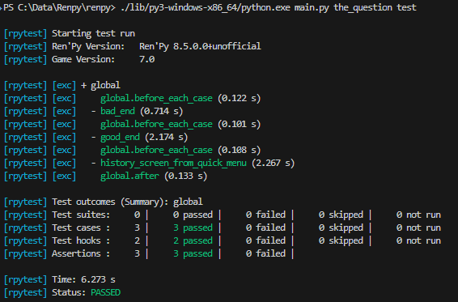

Автоматизированное тестирование
Ren'Py позволяет разработчикам внедрять в свои проекты автоматизированные тесты, гарантирующие, что внесённые изменения и доработки не нарушают существующую функциональность игры. Это особенно ценно для масштабных проектов и новелл, получающих регулярные обновления контента.
Основными компонентами системы тестирования являются операторы testcase
и testsuite.
Функция renpy.is_in_test() позволяет узнать в коде Python, выполняется ли
в данный момент автотест или игра запущена в обычном режиме.
Быстрый старт
В этом разделе показан минимальный практический пример с использованием операторов, наиболее часто встречающихся в реальных сценариях тестирования:
run Jump("...")— начинает выполнение с определённой метки.advance until screen "choice"— листает диалог до появления меню выбора.click "Choice Text"— выбирает пункт меню по тексту.click id "..." until not screen "..."— повторяет клик до закрытия указанного экрана.
Добавьте следующий скрипт Ren'Py в ваш проект:
screen quickstart_popup():
modal True
frame:
xalign 0.5
yalign 0.5
vbox:
spacing 12
text "Всплывающее окно быстрого старта"
textbutton "Закрыть":
id "quickstart_close"
action Hide("quickstart_popup")
label quickstart_demo:
"Добро пожаловать в демонстрацию быстрого старта тест-кейсов."
show screen quickstart_popup
"Закройте всплывающее окно для продолжения."
menu:
"Взять карту":
"Вы взяли карту."
"Оставить её":
"Вы оставили карту на месте."
"Конец демонстрации."
return
# ==== Тестовые сценарии ====
# Их можно поместить в тот же файл или вынести в отдельный (например, testcases.rpy).
testsuite quick_start:
before testcase:
# Гарантируем одинаковую начальную точку для каждого теста
run Jump("quickstart_demo")
advance until screen "quickstart_popup"
testcase choose_map:
pause 0.5
click id "quickstart_close" until not screen "quickstart_popup"
pause 0.5
advance until screen "choice"
click "Взять карту"
advance until "Вы взяли карту."
pause 0.5
testcase leave_map:
pause 0.5
click id "quickstart_close" until not screen "quickstart_popup"
pause 0.5
advance until screen "choice"
click "Оставить её"
advance until "Вы оставили карту на месте."
pause 0.5
После сохранения файла запустите тест через лаунчер или командную строку. Подробнее см. раздел Запуск тест-кейсов.
Лаунчер
Запустить тест можно прямо из графического лаунчера, выбрав пункт «Запустить тест-кейсы» (Run Testcases). Если эта кнопка не отображается, попробуйте сначала запустить игру (или выполнить перекомпиляцию), а затем нажмите кнопку «Обновить» (Refresh) в лаунчере.
Командная строка
Для запуска теста из командной строки используйте команду следующего вида:
./renpy.sh /path/to/game test quick_start
.\lib\py3-windows-x86_64\python.exe renpy.py C:\path\to\game test quick_start
Примечание
Паузы pause в этой демонстрации добавлены исключительно для наглядности, чтобы замедлить выполнение
и позволить вам визуально наблюдать за происходящим на экране. В реальных тестах паузы можно удалить,
чтобы тесты проходили с максимальной скоростью.
Запуск тест-кейсов
На настольных платформах запуск тестов выполняется в окне фиксированного размера, физическое
и отрисовываемое разрешение которого строго совпадает с виртуальным разрешением игры
(config.screen_width на config.screen_height). Сохранённые пользователем размеры окна,
полноэкранный режим, развёрнутое состояние и масштабирование High-DPI не влияют на разрешение тестового окна.
Это обеспечивает абсолютную повторяемость размеров скриншотов и координат обрезки между прогонами.
Размеры тестового окна не сохраняются в пользовательские настройки игры.
Лаунчер
Чтобы запустить тесты из лаунчера, выберите проект и нажмите кнопку «Запустить тест-кейсы» (Run Testcases). Если кнопка не отображается:
Убедитесь, что в проекте определён хотя бы один оператор
testcase.Запустите игру в обычном режиме кнопкой «Запустить проект».
Нажмите кнопку «Обновить» в лаунчере.
По умолчанию запускается глобальный тестовый набор «global».
Командная строка
Для запуска тестов из командной строки откройте консоль в каталоге SDK Ren'Py
и используйте команду test:
cd /path/to/renpy
./renpy.sh <basedir> test [<filters>] [options...]
cd C:\path\to\renpy
.\lib\py3-windows-x86_64\python.exe renpy.py <basedir> test [<filters>] [options...]
- <basedir>
Задаёт путь к каталогу проекта игры.
- <filters>
Указывает имена запускаемых тест-кейсов или наборов тестов (сьютов). Если фильтр не указан, запускается глобальный набор «global». Фильтры чувствительны к регистру символов.
Можно указать несколько фильтров через пробел. Они объединяются по правилу логического «ИЛИ» (тест выполняется, если соответствует хотя бы одному из фильтров).
Примеры см. в разделе Примеры фильтрации тестов.
- --enable-all
Принудительно выполняет все тест-кейсы и тест-сьюты независимо от значения их свойства
enabled. Не действует при явном указании конкретного теста или сьюта.
- --overwrite-screenshots
Перезаписывает существующие эталонные снимки экрана при выполнении оператора screenshot.
- --hide-header
Отключает вывод начального информационного заголовка при старте прогона тестов.
- --hide-execution {no|hooks|testcases|all}
Скрывает подробности выполнения тестов в консоли. Значение
--hide-execution hooksскрывает хуки,--hide-execution testcasesскрывает тест-кейсы и хуки, а--hide-execution allскрывает весь лог выполнения.
- --hide-summary
Отключает вывод итоговой сводки по результатам прогона тестов.
- --report-detailed
Выводит подробную информацию о каждом тесте в процессе выполнения.
- --report-skipped
Выводит информацию о пропущенных тестах. Используется совместно с параметром
--report-detailed.
Примеры фильтрации тестов
Рассмотрим проект со следующей иерархией тестов:
testsuite math:
testcase addition: ...
parameter (a, b) = [(2, 1), (3, 1), (3, 2)]
testcase subtraction: ...
parameter (a, b) = [(2, 1), (3, 1), (3, 2)]
testcase shapes: ...
testsuite graphs:
testcase dot: ...
testcase save: ...
testsuite audio:
testcase save: ...
testcase load: ...
testsuite sprites:
testcase save: ...
testcase load: ...
testcase reload: ...
Все объявленные тесты неявно входят в корневой сьют с именем global.
Запуск всех тестов
Если опустить фильтры или передать global, запускаются абсолютно все тесты:
Команда |
Выбранные тесты |
|---|---|
|
Все тесты проекта |
|
Все тесты проекта |
Выбор конкретного сьюта или тест-кейса
Для разделения уровней вложенности используется точка .:
Команда |
Выбранные тесты |
|---|---|
|
|
|
|
|
|
|
|
|
|
|
|
Префикс global. в начале фильтра можно опускать: команды test math и test global.math
выбирают один и тот же набор тестов.
Маски подстановки (Wildcards)
Символ звёздочки * заменяет любую последовательность символов внутри одного сегмента имени
(одна звёздочка не может пересекать границу точки .):
Команда |
Выбранные тесты |
|---|---|
|
|
|
|
|
|
Параметризованные тесты
Когда тест-кейс использует ключевое слово parameter, каждая комбинация параметров считается
отдельным запуском теста.
Подробнее см. Параметризованные тесты.
Команда |
Выбранные тесты |
|---|---|
|
|
|
|
|
|
Примечание
Фильтры, содержащие круглые скобки, заключайте в кавычки во избежание их интерпретации командной оболочкой (shell).
Несколько фильтров одновременно
Разделяйте фильтры пробелами. Тест запускается, если он соответствует любому из указанных фильтров:
Команда |
Выбранные тесты |
|---|---|
|
|
|
|
Краткая шпаргалка по синтаксису фильтров
Символ |
Значение |
Пример |
|---|---|---|
|
Разделитель сьютов |
|
|
Маска (только один уровень) |
|
|
Значения параметров |
|
Оператор Testcase
Оператор testcase создаёт именованный тест-кейс (тестовый сценарий). Каждый кейс содержит
блок тестовых инструкций (описанных ниже). Тест-кейсы концептуально похожи на
метки Ren'Py (labels), но имеют важные отличия:
Метка label принимает обычный код сценария Ren'Py, тогда как оператор testcase принимает специализированные тестовые команды. Они взаимоисключающи.
В тест-кейсах отсутствует эквивалент оператора return.
Тестовые инструкции не могут находиться вне тестовых блоков, тогда как код Ren'Py может объявляться вне меток.
Оператор поддерживает следующие свойства:
- description
Строка с описанием теста, отображаемая в итоговом отчёте.
- enabled
Если выражение вычисляется в
False, тест пропускается. По умолчанию —True. Позволяет выборочно отключать тесты (например, на неподдерживаемых платформах):testcase windows: enabled renpy.windows ... testcase not_on_mobile: enabled not renpy.mobile ...
Подробнее см. раздел Пропуск тест-кейсов.
- only
Если выражение вычисляется в
True, будут выполнены только данный тест-кейс (и другие тесты со свойствомonly True). По умолчанию —False. Подробнее см. Пропуск тест-кейсов.
- xfail
Если выражение вычисляется в
True, тест помечается как ожидаемо падающий (expected failure). Если он завершится ошибкой, в отчёте он будет отмечен статусомxfailedвместоfailed. По умолчанию —False.
- parameter
Имя переменной (или кортеж имён переменных) и список значений (или список кортежей значений). Тест будет выполнен по одному разу для каждого значения из списка.
Тест может иметь несколько свойств
parameter: в этом случае он запустится для всех возможных комбинаций параметров (декартово произведение). Подробнее см. Параметризованные тесты.
Оператор Testsuite
Оператор testsuite объединяет тест-кейсы в логические группы (сьюты). Тестовые наборы могут
включать в себя отдельные тест-кейсы, другие вложенные наборы тестов, а также хуки жизненного цикла.
По умолчанию корневой набор тестов называется global и создаётся Ren'Py автоматически,
если не объявлен разработчиком явно. Он содержит все сьюты и тест-кейсы верхнего уровня.
Оператор testsuite принимает те же свойства, что и оператор testcase.
Хуки жизненного цикла (Hooks)
Оператор testsuite может содержать следующие хуки:
- setup
Блок тестовых команд, выполняемый один раз в самом начале сьюта перед запуском любых входящих в него тестов.
- before testsuite
Блок тестовых команд, выполняемый перед каждым дочерним тестовым набором внутри текущего сьюта.
- before testcase
Блок тестовых команд, выполняемый перед каждым тест-кейсом внутри текущего сьюта.
- after testcase
Блок тестовых команд, выполняемый после каждого тест-кейса в текущем сьюте. Вызывается всегда, даже если тест-кейс упал с ошибкой или выбросил исключение.
- after testsuite
Блок тестовых команд, выполняемый после каждого дочернего сьюта в текущем сьюте. Вызывается всегда, даже если сьют завершился ошибкой.
- teardown
Блок тестовых команд, выполняемый один раз в конце сьюта после завершения всех его тестов. Вызывается всегда, даже если тесты упали с ошибкой.
Хуки before * и after * поддерживают следующее свойство:
- depth
Определяет глубину вложенности тестов, на которую распространяется действие хука:
-1: хук выполняется для всех вложенных тестов на любой глубине.0: хук выполняется только для прямых потомков текущего сьюта (без вложенности).Положительное число: глубина вложенности уровней.
Значения по умолчанию:
-1дляbefore testcaseиafter testcase(действует на все вложенные кейсы).0дляbefore testsuiteиafter testsuite(действует только на прямые дочерние сьюты).
Подробнее см. раздел Жизненный цикл выполнения тестов.
Жизненный цикл выполнения тестов
В этом разделе описывается порядок выполнения тест-кейсов и сьютов, а также последовательность вызова хуков. Следующий пример наглядно иллюстрирует этот процесс:
Код |
Порядок выполнения |
|---|---|
label test_demo:
"Это демо для тест-кейсов."
"Оно содержит несколько реплик и меню."
menu:
"Первый выбор":
"Выбран первый вариант."
"Второй выбор":
"Выбран второй вариант."
"Третий выбор":
"Выбран третий вариант."
return
testsuite global:
setup:
$ print("global :: setup")
skip until screen "main_menu"
before testsuite:
$ print("global :: before testsuite")
if not screen "main_menu":
run MainMenu(confirm=False)
click "Start"
before testcase:
$ print("global :: before testcase")
after testcase:
$ print("global :: after testcase")
after testsuite:
$ print("global :: after testsuite")
teardown:
$ print("global :: teardown")
exit
testsuite basic:
testcase first_testcase:
$ print("basic.first_testcase")
advance
testsuite test_choices:
setup:
$ print("test_choices :: setup")
before testcase:
$ print("test_choices :: before testcase")
run Jump("test_demo")
advance until screen "choice"
after testcase:
$ print("test_choices :: after testcase")
teardown:
$ print("test_choices :: teardown")
testcase choice1:
$ print("test_choices.choice1")
click "Первый выбор"
testcase choice2:
enabled False
$ print("test_choices.choice2 (disabled)")
click "Второй выбор"
testcase choice3:
$ print("test_choices.choice3")
click "Третий выбор"
|
global :: setup global :: before testsuite global :: before testcase basic.first_testcase global :: after testcase global :: after testsuite global :: before testsuite test_choices :: setup global :: before testcase test_choices :: before testcase test_choices.choice1 test_choices :: after testcase global :: after testcase global :: before testcase test_choices :: before testcase test_choices.choice3 test_choices :: after testcase global :: after testcase test_choices :: teardown global :: after testsuite global :: teardown |
Обратите внимание, что хуки global :: before testcase и global :: after testcase
выполняются до и после каждого тест-кейса, даже если тест-кейс находится внутри глубоко
вложенного тестового набора.
Чтобы ограничить область действия хука, задайте его свойство depth.
Установка значения 0 заставит хук срабатывать только для тестов, непосредственно
расположенных в данном сьюте.
Например:
testsuite global:
before testcase:
depth 0
$ print("Запуск тест-кейса верхнего уровня.")
С другой стороны, хуки before testsuite и after testsuite имеют значение depth
по умолчанию, равное 0, то есть они выполняются только для сьютов, являющихся прямыми
потомками данного сьюта.
Чтобы расширить область действия хука на все уровни вложенности, установите свойство depth
в -1 (для бесконечной глубины) или в положительное целое число (для точного количества уровней).
Примечание
По завершении прогона тестов игра не закрывается автоматически. Вместо этого управление возвращается игроку в текущий момент сценария, ожидая пользовательского ввода.
Чтобы автоматически закрыть игру после выполнения сьюта, вызовите тестовую инструкцию
exit в хуке teardown:
testsuite global:
teardown:
exit
Пропуск тест-кейсов
Если тест-кейс пропущен, он не выполняется. Кроме того, для него не вызываются хуки
before testcase и after testcase окружающего сьюта.
Если в сьюте пропущены все тесты, хуки setup и teardown данного сьюта также
не выполняются. Дополнительно родительский сьют не выполняет для него хуки before testsuite
и after testsuite.
Параметризованные тесты
Один и тот же тест-кейс можно выполнить многократно с различными наборами входных данных
с помощью свойства parameter.
Для этого укажите имя переменной и список значений. Тест выполнится по одному разу для каждого значения из списка. Например:
testcase click_buttons:
parameter button_name = ["Load", "Save"]
click text button_name
Этот тест запустится дважды: сначала нажав кнопку «Load», затем «Save».
Параметризация концептуально эквивалентна генерации нескольких независимых тест-кейсов
или сьютов, при этом все соответствующие хуки (включая setup и teardown) выполняются
для каждого значения параметра отдельно.
Группированные параметры
Можно задавать несколько связанных переменных одновременно, объединив их в круглые скобки и передав список кортежей значений. Например:
testcase addition:
parameter (x, y, z) = [ (1, 2, 3), (2, 3, 5), (3, 5, 8) ]
assert eval (x + y == z)
Этот тест выполнится три раза со следующими значениями:
(x=1, y=2, z=3), (x=2, y=3, z=5) и (x=3, y=5, z=8).
Комбинации параметров
Если тест содержит несколько свойств parameter, тест-кейс запустится для каждой возможной
комбинации значений (декартово произведение). Например:
testcase combinations:
parameter a = [1, 2]
parameter b = [3, 4]
parameter c = [5, 6]
assert eval (a + b + c in [9, 10, 11, 12])
Этот тест выполнится восемь раз — по одному разу для каждой тройки (a, b, c):
(1, 3, 5),(1, 3, 6),(1, 4, 5),(1, 4, 6),(2, 3, 5),(2, 3, 6),(2, 4, 5),(2, 4, 6)
Группированные и одиночные параметры можно свободно комбинировать между собой:
testcase mixed:
parameter a = [1, 2]
parameter (b, c) = [ (3, 5), (4, 6) ]
assert eval (a + b + c in [9, 10, 11, 12])
Этот тест запустится четыре раза:
(1, (3, 5)),(1, (4, 6)),(2, (3, 5)),(2, (4, 6))
Использование параметров в выражениях
Параметры можно использовать в любых свойствах тестов, принимающих выражения.
Например, тест выполняется трижды для значений x. Тест считается успешно пройденным,
когда x равен 0 или 1, и ожидаемо падает (xfail), когда x равен 2:
testcase choice_test:
parameter x = [0, 1, 2]
xfail x == 2
assert eval (x < 2)
Параметры также можно использовать для выбора экранов или кнопок по имени:
testcase show_menu:
parameter screen_name = ["preferences", "load"]
run ShowMenu(screen_name)
pause until screen screen_name
run Return()
Параметры доступны и внутри блоков кода Python:
testcase param_test:
parameter (x, y) = [(0.0, 0.0), (0.5, 0.5), (1.0, 1.0)]
$ print(f"Клик в позицию ({x}, {y})")
click pos (x, y)
Параметризованные наборы тестов (сьюты)
Параметры можно задавать для всего тест-сьюта целиком. В этом случае все хуки и тест-кейсы внутри сьюта будут выполнены для каждого набора параметров.
Каждый параметризованный прогон сьюта заново выполняет хуки setup, before/after testsuite
и teardown.
Пример:
testsuite math_tests:
parameter (x, y, z) = [ (1, 2, 3), (2, 3, 5), (3, 5, 8) ]
setup:
$ print(f"Запуск математических тестов: x={x}, y={y}, z={z}")
testcase addition:
assert eval (x + y == z)
testcase multiplication:
assert eval (x*y == z*y - y*y)
Параметры могут быть вложенными, при этом перебираются все их комбинации:
testsuite parameter_field:
parameter choice_text = ["first", "second"]
testcase param_test2:
parameter (x, y) = [(0.0, 0.0), (0.5, 0.5)]
advance until screen "choice"
click choice_text
click pos (x, y)
Этот набор запустится 4 раза — для каждой пары (choice_text, (x, y)).
Предупреждение
Параметры передаются по ссылке. Если вы модифицируете изменяемый объект (например, список или словарь), эти изменения затронут все последующие тесты, использующие тот же объект.
Исключения и ошибки выполнения
Если во время выполнения тест-кейса возникает ошибка:
Выполнение текущего тест-кейса немедленно прекращается.
Вызывается хук
after testcaseсодержащего его сьюта.Если в сьюте остались другие тест-кейсы, их выполнение продолжается в обычном порядке (включая хук
before testcase).После завершения всех тест-кейсов вызывается хук
after testsuite.
Если ошибка возникает внутри хука (например, в before testcase):
Выполнение текущего тестового набора немедленно прекращается.
Если сьют был вызван родительским набором тестов, выполнение родительского сьюта продолжается.
Если родительского сьюта нет, весь прогон тестов завершается.
Отчёты о тестировании
По завершении прогона тестов в консоль выводится сводный отчёт со списком всех тест-кейсов
и их результатами. Если указан параметр --report-detailed, отчёт содержит подробную
информацию по каждому шагу теста.
Ниже приведён пример отчёта после успешного тестирования новеллы «The Question»:

Результаты тестирования
Тест может завершиться с одним из следующих результатов:
Passed (Пройден): тест успешно выполнился без ошибок.
Failed (Провален): тест выполнялся, но одна из инструкций или проверок завершилась сбоем.
XFailed (Ожидаемо провален): тест должен был упасть (свойство
xfailвычислено вTrue) и действительно завершился ошибкой.XPassed (Неожиданно пройден): тест должен был упасть (свойство
xfailвычислено вTrue), но неожиданно выполнился без ошибок.Skipped (Пропущен): тест был пропущен (свойство
enabledвычислено вFalseлибо запущен другой тест с директивойonly True).
В целом тестовый прогон считается успешным, если все тесты имеют статус Passed или XFailed, и неуспешным при наличии тестов со статусом Failed или XPassed.
Настройки тестирования
Поведение подсистемы тестирования можно настраивать с помощью следующих переменных:
- _test.maximum_framerate
Логическая переменная, определяющая, должен ли использоваться режим максимальной частоты кадров во время тестов. По возможности снимает ограничение FPS выше частоты развёртки монитора. По умолчанию —
True.
- _test.timeout
Число с плавающей запятой, задающее максимальное время ожидания выполнения условия (в секундах) для тестовых инструкций. По умолчанию —
10.0.Может переопределяться для отдельных инструкций с помощью локального параметра
timeout(поддерживаемого, например, инструкциямиassertиuntil).
- _test.force
Определяет, должен ли тест продолжать выполнение, даже если переменная
renpy.config.suppress_underlayустановлена вTrue. По умолчанию —False.
- _test.transition_timeout
Максимальное время ожидания завершения визуального перехода (в секундах) до его принудительного пропуска и продолжения теста. По умолчанию —
5.0.
- _test.focus_trials
Количество попыток поиска подходящей точки для перемещения мыши при использовании селектора без явного указания позиции. По умолчанию —
100.
- _test.screenshot_directory
Каталог для сохранения эталонных и проверочных снимков экрана. По умолчанию —
tests/screenshots.
- _test.vc_revision
Идентификатор ревизии системы контроля версий (обычно хэш коммита git), если доступен. По умолчанию берётся из переменной окружения
RENPY_TEST_VC_REVISIONили остаётся пустой строкой.
Тестовые инструкции
Тестовые инструкции — это базовые команды, из которых строятся сценарии тестирования. Их можно разделить на три основные категории: команды действий, условия/селекторы и управляющие конструкции.
За командными инструкциями могут следовать конструкции Repeat и Until.
В описании синтаксиса на этой странице используются следующие обозначения:
[]— необязательный фрагмент синтаксиса.<name>— обязательное значение, подставляемое автором теста.<name: type>— значение с указанием ожидаемого типа данных.Слова без скобок
<>записываются буквально, как есть.Круглые скобки и запятые являются обязательными элементами синтаксиса.
Например, для конструкции click [pos (<x: int>, <y: int>)]:
click— буквальное ключевое слово команды.Всё внутри
[]необязательно.pos (— литеральная строка.<x: int>— координата X (целое число).<y: int>— координата Y (целое число).)— закрывающая скобка.
Примеры допустимых вызовов:
clickclick pos (0, 0)click pos (10, 50)
Базовые команды
Advance
Тип: Команда
- advance
Продвигает диалог вперёд на одну реплику.
advance
advance until screen "choice"
Exit
Тип: Команда
- exit
Завершает игру без показа экрана подтверждения выхода. При выходе игра не сохраняется.
if eval need_to_confirm:
# Запрашивает подтверждение и сохраняет игру, если config.autosave_on_quit = True
run Quit(confirm=True)
if eval persistent.quit_test_using_action:
# Выходит без запроса, но сохраняет игру при config.autosave_on_quit = True
run Quit(confirm=False)
exit # мгновенный выход без запросов и сохранений
Pass
Тип: Команда
- pass
Пустая операция (no-op). Позволяет создавать пустые тест-кейсы без команд.
testcase not_yet_implemented:
pass
Pause
Тип: Команда
- pause [<seconds: float>]
Приостанавливает выполнение теста на указанное количество секунд. Длительность можно опустить, если команда используется совместно с условием Until.
pause 5.0
pause until screen "inventory"
Run
Тип: Команда
- run <action>
Выполняет указанное действие экранного языка (Action) (или список действий).
Инструкция ожидает, пока действие станет доступно (чувствительно к нажатию), после чего активирует его. Это эквивалентно ожиданию кликабельности экранной кнопки с данным действием с последующим кликом по ней.
run Start("chapter_1")
run Jump("chapter_3")
run Preference("main volume", 0.5)
Skip
Тип: Команда
- skip [fast]
Включает режим пропуска (скипа). Если игра находится в меню, она выходит из меню и возвращается в игровой процесс. В противном случае включает ускоренный пропуск текста.
Если указан флаг fast, игра мгновенно перематывает сценарий до следующего меню выбора.
skip
skip fast
skip until screen "choice"
Команды мыши
Свойства, общие для всех команд работы с мышью:
- <target>
Эквивалентно выражению [<selector>] [pos (<x: int or float>, <y: int or float>)]
<selector>— инструкция селектора, напримерid "my_button"или"Текст".pos— пара координат (x, y). Если координата задана целым числом (int), она означает абсолютное число пикселей. Если число с плавающей запятой (float), оно трактуется как нормализованная координата от0.0(левый/верхний край) до1.0(правый/нижний край) относительно ширины или высоты цели. Если селектор не указан, float рассчитывается относительно разрешения всего экрана.
Примечание
Значение float, равное 1.0, проецируется на пиксель width - 1 (или height - 1),
поэтому координата 1.0 попадает на крайний пиксель внутри элемента, а не за его пределы.
Селектор |
|
Результат |
|---|---|---|
Нет |
Нет |
Текущая позиция курсора мыши* |
Да |
Нет |
Случайная кликабельная точка внутри селектора |
Нет |
Да |
Координаты относительно экрана |
Да |
Да |
Координаты относительно выбранного селектора |
* Если мышь до этого ни разу не перемещалась, выбирается случайная позиция на экране.
- button <int>
Задаёт виртуальную кнопку мыши. По умолчанию — 1.
1: Левая кнопка мыши (ЛКМ)
2: Правая кнопка мыши (ПКМ)
3: Средняя кнопка мыши (колёсико)
4и5: Дополнительные боковые кнопки
Click
Тип: Команда
- click [<target>] [button <int>]
Выполняет виртуальный клик мыши на экране.
# Клик в текущей позиции указателя мыши
click
# Клик по кнопке с конкретным текстом
click "Start"
# Клик по кнопке с текстом из переменной
$ button_name = "Load"
click text button_name
# Правый клик по конкретному элементу
click id "inventory_button" button 2
# Клик в центр целевого элемента
click id "inventory_button" pos (0.5, 0.5)
Drag
Тип: Команда
- drag <target> to <target> [button <int>] [steps <int>]
Имитирует перетаскивание (drag-and-drop) на экране:
Первый аргумент
<target>задаёт начальную точку захвата.Второй аргумент
<target>задаёт конечную точку перемещения.Параметр
stepsопределяет количество промежуточных шагов интерполяции. По умолчанию —10. Большее число шагов делает перетаскивание более плавным, но занимает больше времени.
drag id "item_icon" to id "inventory_slot_3" button 1 steps 20
drag pos (100, 200) to pos (400, 500) button 1
drag id "item_icon" pos (0.5, 0.5) to pos (300, 400) steps 5
drag pos (50, 50) to id "inventory_slot_1"
drag pos (50, 50) to pos (150, 150)
Move
Тип: Команда
- move <target>
Перемещает виртуальный курсор мыши в указанную точку экрана.
# Перемещение в случайную точку внутри кнопки back_btn
move id "back_btn"
# Перемещение точно в центр back_btn
move id "back_btn" pos (0.5, 0.5)
# Перемещение со смещением 20px вправо и 10px вниз от левого верхнего угла back_btn
move id "back_btn" pos (20, 10)
# Перемещение в правый верхний угол экрана
move pos (1.0, 0.0)
# Перемещение в точку (20, 10) от левого верхнего угла экрана
move pos (20, 10)
Scroll
Тип: Команда
- scroll [amount <int>] [<target>]
Имитирует вращение колёсика мыши.
amountзадаёт число шагов прокрутки. По умолчанию —1. Положительные значения прокручивают вниз, отрицательные — вверх.
scroll "bar"
scroll id "inventory_scroll"
scroll amount 10 id "inventory_scroll" pos (0.5, 0.5)
scroll # прокрутка вниз в текущей позиции курсора
Примечание
Команда посылает низкоуровневое событие колёсика мыши, которое может напрямую не сдвинуть полосу прокрутки. Для надёжного управления прокруткой рекомендуется использовать действие Scroll из Действия, значения и функции экранов:
run Scroll("inventory_scroll", "increase", amount="step", delay=1.0)
Команды клавиатуры
Keysym
Тип: Команда
- keysym <str> [<target>]
Имитирует нажатие клавиши по её символьному имени (keysym). Поддерживает все имена клавиш из раскладки config.keymap.
keysym "skip"
keysym "help"
keysym "ctrl_K_a"
keysym "K_BACKSPACE" repeat 30
keysym "pad_a_press"
Type
Тип: Команда
- type <str> [<target>]
Вводит указанную текстовую строку так, словно она была набрана пользователем на клавиатуре.
type "Привет, мир!"
Условные инструкции
Условия проверяют истинность определённого состояния игры. Они используются в инструкциях,
принимающих логические выражения, таких как if, assert или until.
Логические значения
В тестах можно напрямую использовать булевы литералы True и False:
if True:
click "Start"
if False:
click "Settings" # никогда не выполнится
Логические операции
Условия поддерживают стандартные логические операторы not, and и or (выражения можно брать в скобки):
assert screen "main_menu" and eval renpy.is_in_test()
advance until "спросить прямо" or label "chapter_five"
click "Next" until not screen "choice"
Eval
Тип: Условие
- eval <python_expression>
Вычисляет переданное выражение Python. Используется исключительно внутри условий таких инструкций,
как assert, if или until.
assert eval some_function(args)
assert eval (x + y == z) # Скобки можно использовать опционально
if eval persistent.should_advance:
Примечание
Различия между строкой Python с долларом ($) и конструкцией eval:
evalне может стоять на отдельной строке — он используется только внутри условийif,untilи т. д.Строка с долларом выполняет инструкцию Python, не обязательно возвращающую значение (например,
$ import math), тогда как выражениеevalобязательно должно возвращать значение.
Label
Тип: Условие
- label <name: str>
Проверяет, достигало ли выполнение указанной метки Ren'Py (label) с момента последнего выполнения предыдущей тестовой инструкции.
Рассмотрим пример:
run Jump("chapter_1")
assert label chapter_1 # успешно
assert label chapter_1 # ошибка
Первая инструкция assert успешна, потому что метка chapter_1 была достигнута вызовом
run Jump("chapter_1"). Вторая инструкция завершится сбоем, так как после первого assert
метка chapter_1 заново не достигалась.
Это также означает, что следующий код не сработает:
run Jump("chapter_1")
advance repeat 3
assert label chapter_1 # ошибка: метка была пройдена инструкциями advance
Инструкции селекторов
Селекторы проверяют наличие определённых элементов на экране и позволяют взаимодействовать с ними. Селекторы являются специализированным видом условий.
В сигнатурах команд <target> и <selector> селектором может выступать screen <имя>,
id <идентификатор>, строка в кавычках "текст" или выражение text <выражение>.
Селектор отображаемых объектов
Тип: Условие, Селектор
Выбирает отображаемый экран или элемент по его имени или уникальному идентификатору (id), с возможностью ограничения конкретным графическим слоем:
- screen <name: str>
Имя проверяемого экрана.
- id <name: str>
Идентификатор id проверяемого элемента.
- layer <name: str>
Слой, на котором отображается экран. Если не указан, слой определяется автоматически по имени экрана.
if screen "main_menu":
click "Start"
advance until id "inventory_viewport" layer "overlay"
click "Close" until not id "close_button"
Текстовый селектор
Тип: Условие, Селектор
- text <expression> [raw]
- "<text>" [raw]
Селектор text принимает строку и находит соответствующий элемент на экране. Поиск выполняется
по всем элементам экрана, способным получать фокус (кнопкам, полям ввода, текстовому окну диалога),
проверяя их видимый текст и свойство alt.
Поиск нечувствителен к регистру символов и выбирает кратчайшее совпадение. Например, при поиске строки
"лог" среди текстов "Логи" и "диалоговое окно" целью будет выбран элемент "Логи".
Если указан флаг raw, поиск осуществляется по исходному тексту сценария до применения
переводов и текстовых подстановок. Без флага поиск проверяет текст
в том виде, как он реально отображается на экране.
# Поиск текста на кнопке
skip until "Начать игру"
# Поиск текста в диалоговом окне
advance until "Эй, это нечестно!"
# Регистронезависимый поиск
assert "сПросиТь ПрЯмО СейЧаС"
# Поиск текста без подстановок
assert "Добро пожаловать, Эйлин!"
assert "Добро пожаловать, [player_name]!" raw
# Поиск непереведённого текста после смены языка
run Language("japanese")
assert "スタート"
assert "Start" raw
# Поиск по значению переменной
$ string_to_find = "Привет!"
assert text string_to_find
Примечание
Для стабильных тестов графического интерфейса рекомендуется отдавать предпочтение селекторам по id.
Текстовые селекторы используйте в тех случаях, когда проверяется сам текст реплик или надписей.
Управляющие инструкции
Assert
Тип: Управление
- assert <condition> [timeout <seconds: float>] [xfail <bool>]
Проверяет истинность условия в момент выполнения инструкции assert.
Если указан параметр timeout, инструкция ожидает выполнения условия до указанного числа секунд.
Если timeout не задан, проверка выполняется мгновенно.
Если условие не выполняется, возбуждается исключение RenpyTestTimeoutError.
Если параметр xfail установлен в True, утверждение считается ожидаемо падающим: условие инвертируется,
и прохождением проверки считается ситуация, когда условие НЕ выполняется.
# Проверка наличия экрана
assert screen "main_menu"
# Проверка условия Python
assert eval persistent.seen_intro
# Комбинированное условие
assert eval persistent.seen_intro and screen "main_menu"
# С таймаутом ожидания
assert id "start_button" timeout 5.0
For
Тип: Управление
- for <variable> in <iterable>
Выполняет блок тестовых инструкций для каждого элемента переданного итерируемого объекта.
Параметр <iterable> вычисляется как выражение Python. Внутри цикла поддерживаются операторы
break и continue.
Пример:
# Кликнуть «Далее» три раза
for _ in range(3):
click "Далее"
# Перебрать варианты выбора, пропустив торговлю, если магазин заблокирован
for choice in ["Поговорить", "Торговать", "Уйти"]:
if eval (choice == "Торговать" and not persistent.shop_unlocked):
continue
click text choice
if screen "shop":
break
If
Тип: Управление
- if <condition>
Выполняет блок тестовых инструкций, если условие истинно. Поддерживает ветки elif и else.
if label "chapter_five":
exit
if eval persistent.should_advance:
advance
elif eval i_should_advance["now"]:
advance
else:
click "Start"
Repeat
Тип: Управление
- <command> repeat <count: int> [timeout <seconds: float>]
Повторяет указанную команду заданное количество раз. Слева записывается команда, справа — число
повторений после слова repeat.
click "+" repeat 3
keysym "K_BACKSPACE" repeat 10
advance repeat 3
Screenshot
Тип: Управление
- screenshot <path: str> [max_pixel_difference <int or float>] [crop (<x: int>, <y: int>, <width: int>, <height: int>)]
Создаёт снимок экрана и сохраняет его по указанному пути.
Если эталонный графический файл уже существует на диске, текущий скриншот попиксельно сравнивается
с эталоном. Если различие превышает порог max_pixel_difference, возбуждается исключение
RenpyTestScreenshotError.
path— путь к файлу (относительно каталога_test.screenshot_directory). Поддерживается только формат.png.max_pixel_difference— допустимый порог различий пикселей. Целое число задаёт абсолютное количество пикселей, а float — процент от общего числа пикселей изображения. По умолчанию —0.crop— прямоугольная область обрезки скриншота в формате(x, y, width, height). Координаты задаются целыми числами.
Если переменная _test.vc_revision задана, её значение автоматически добавляется к имени файла
в формате @{_test.vc_revision}.png (например, screens/main_menu@a1b2c3d.png), что позволяет
отслеживать визуальные изменения экранов по коммитам.
Чтобы перезаписать существующий эталонный скриншот, удалите старый файл либо запустите тесты
с флагом --overwrite-screenshots.
screenshot "screens/main_menu.png"
screenshot "screens/inventory" max_pixel_difference 0.01
screenshot "button.png" crop (10, 10, 100, 50)
Until
Тип: Управление
- <command> until <condition> [timeout <seconds: float>]
Повторяет выполнение команды до тех пор, пока условие не станет истинным. Если условие не выполнилось
до истечения таймаута, тест падает с ошибкой RenpyTestTimeoutError.
Локальный параметр timeout временно переопределяет глобальную настройку _test.timeout.
advance until screen "choice"
click "Next"
advance until label "chapter_5"
skip until screen "inventory" timeout 20.0
While
Тип: Управление
- while <condition>
Выполняет блок инструкций в цикле до тех пор, пока условие остаётся истинным. Поддерживает операторы break и continue.
$ should_advance = True
while eval should_advance:
advance
if screen "main_menu":
break
$ should_advance = some_evaluation_function()
Блоки Python и однострочные инструкции ($)
Внутри тест-кейса можно использовать блоки python и однострочные инструкции ($).
В отличие от обычного скрипта игры, блоки python в тестах не поддерживают конструкцию in substore,
но поддерживают ключевое слово hide. Оба варианта позволяют выполнять произвольный код Python.
Код блоков инициализации (init) выполняется до запуска тестов, поэтому функции и классы,
объявленные в блоках init python, доступны для вызова в тестовых инструкциях:
init python in test:
def afunction():
if renpy.is_in_test():
return "test"
return "not test"
testcase default:
$ print(test.afunction()) # вывод попадёт в консоль
См. также
Примеры реальных автотестов можно изучить в исходном коде Ren'Py: